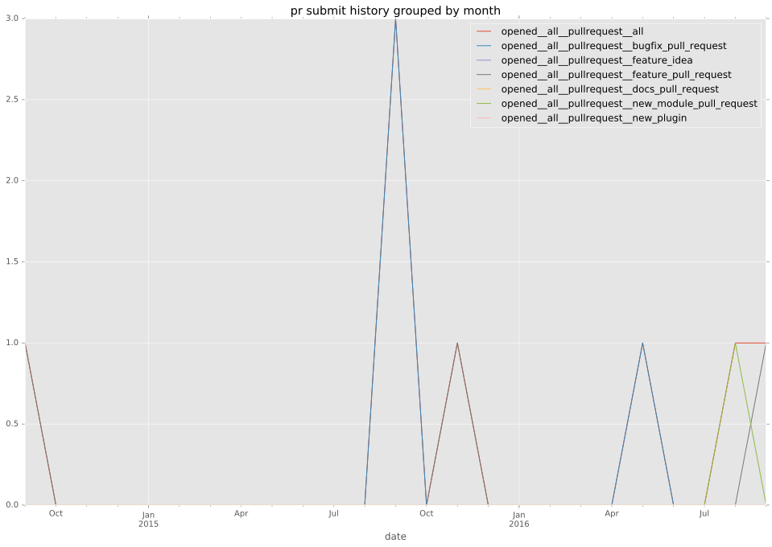
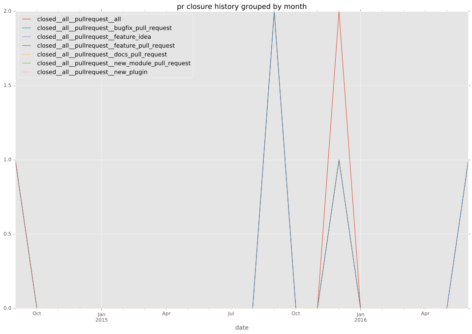
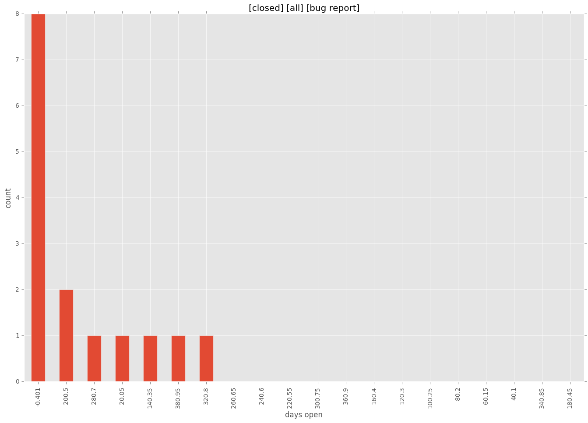

authors
- trondhindenes
- petemounce
- elventear
- smadam813
maintainers
- smadam813
contributors
- elventear : 47 commits
- superquadratic : 13 commits
- nitzmahone : 8 commits
- Greyeye : 8 commits
- trondhindenes : 5 commits
- tim-seoss : 1 commits
- daveres : 1 commits
total issue counts
bugfix pull request: 9
docs report: 1
pullrequest: 17
docs pull request: 1
feature pull request: 7
feature idea: 3
issue: 22
bug report: 18
issue history
pullrequest history


days open by issue type
feature pull request
count: 10
std: 40.4551878283
min: 11
max: 141
median: 37.5
mean: 45.2
all
count: 41
std: 107.959613045
min: 0
max: 401
median: 17.0
mean: 71.1463414634
pullrequest
count: 0
std: nan
min: nan
max: nan
median: nan
mean: nan
docs pull request
count: 1
std: nan
min: 58
max: 58
median: 58.0
mean: 58.0
docs report
count: 1
std: nan
min: 229
max: 229
median: 229.0
mean: 229.0
bugfix pull request
count: 13
std: 29.0616056521
min: 0
max: 105
median: 3.0
mean: 16.9230769231
feature idea
count: 1
std: nan
min: 317
max: 317
median: 317.0
mean: 317.0
issue
count: 0
std: nan
min: nan
max: nan
median: nan
mean: nan
bug report
count: 15
std: 143.653253158
min: 0
max: 401
median: 6.0
mean: 109.4
closures grouped by total days open
